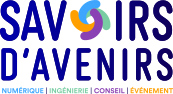
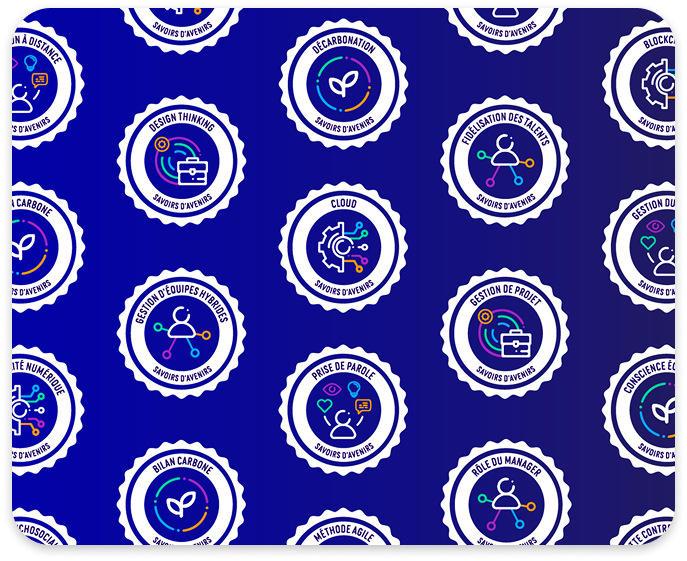

Des modules ludiques
et concrets pour acquérir
des connaissances
Savoirs d'Avenirs est un catalogue de micro-learning et de micro-certification accessible aux salariés des entreprises de la branche des Bureaux d'Études.
Cette plateforme met en avant les connaissances stratégiques pour les salariés des entreprises du Numérique, de l'Ingénierie, du Conseil et de l'Événement.

Des formats courts et interactifs, parfaitement adaptés aux rythmes professionnels.
Une plateforme intuitive, accessible depuis son ordinateur ou son smartphone.
La possibilité de construire son propre parcours d’apprentissage en fonction de ses besoins.
Activez votre compte entreprise
Pour offrir à vos collaborateurs des contenus concrets pour relever les défis de demain.
Savoirs d'Avenirs est accessible sans frais aux entreprises de la branche des Bureaux d'Études disposant d'un compte myAtlas entreprise.
Des contenus d’auto-formation
de qualité sur 5 domaines à enjeux
Transition numérique
Transition écologique
Ressources humaines
Processus métier
Soft skills

Une expérience de micro-learning interactive et engageante
- Des contenus co-produits avec plus de 60 auteurs sélectionnés pour leur expertise dans leur secteur ou en tant qu’éditeur.
- Une acquisition des connaissances progressive, à son rythme.
- En suivant les parcours proposés, l’apprenant décroche un Badge d'Avenirs certifiant l'acquisition de connaissances et valorisable en interne ou sur les réseaux sociaux.